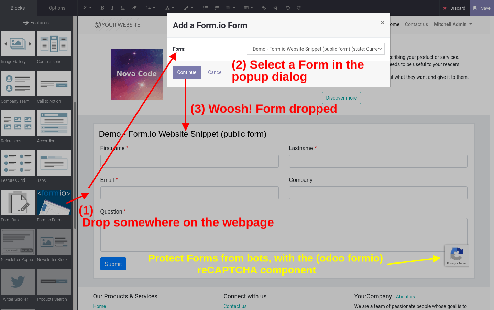
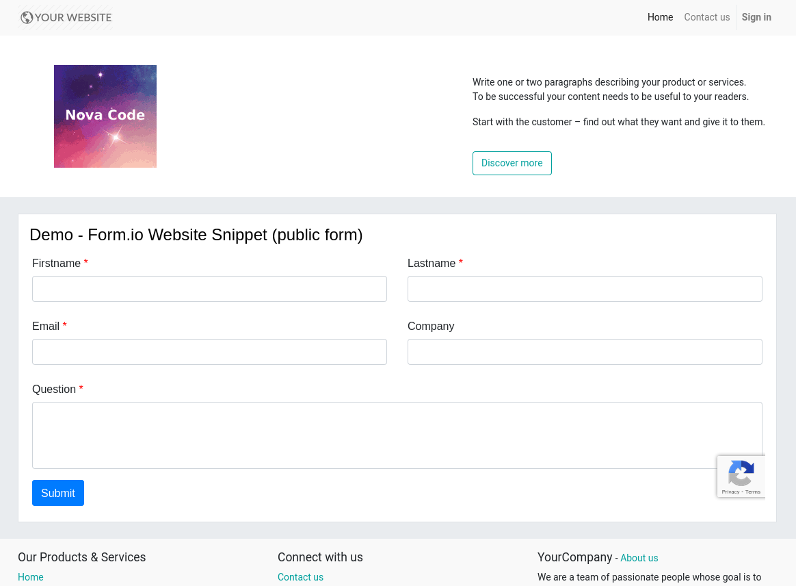

Website (snippet) Forms are avaiable for Form Builders where checkbox/field public is checked.

Website - Form on webpage

Features:
Powerful "Drag and drop" Form Builder in Odoo.
On-premise (your server) hosting and storage of data (Form Builders, Submissions etc). So you're under control!
After installation of this module you can start right away with building and adding Forms on the Website.
Open source, so contributions are welcome.
Releases
1.7
Fix JavaScript error: iframeResize is not defined.
This error was usually not obvious in the UI (but shown in browser JS console).
1.6
Store website visitor (Many2one) of the Form submission.
Store timezone (website visitor) of the Form submission.
1.5
Fix: Show the complete (resized) Form, after dropping on the webpage!
Only list published Form Builders in the drag&drop selectbox (Form chooser).
1.4
Configure a redirect, after (submit) submission of website Form.
1.3
Include a solution (module) to prevent loosing (sanitizing) the Form added to certain Website pages, from the Website Builder/Editor.
This adds the module dependency Website Editor Unsanitize HTML Field (website_editor_unsanitize_html_field).
It enables configuration to unsanitize specific (model) HTML Fields, upon saving the Model record from the Website Builder/Editor.
By default the HTML Field (class) sanitizes its data/value before storing, which causes this undesired side effect.
1.2
Change the public Form loading and submit (URLs, handling) from ID to UUID.
This slightly protects from abuse of public Forms (some obfuscation of the real id). Requires the formio (base) module version >= 5.2